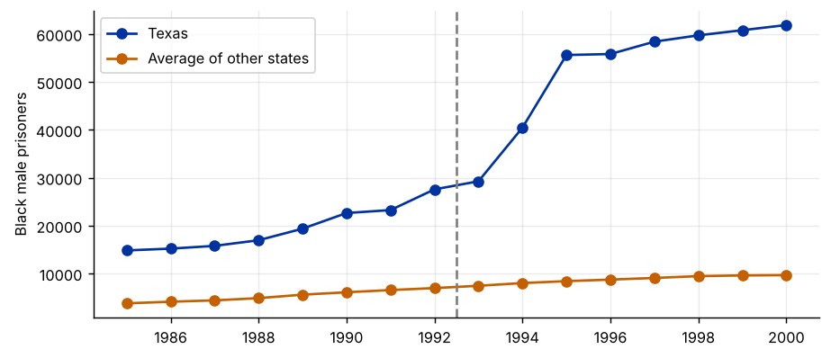
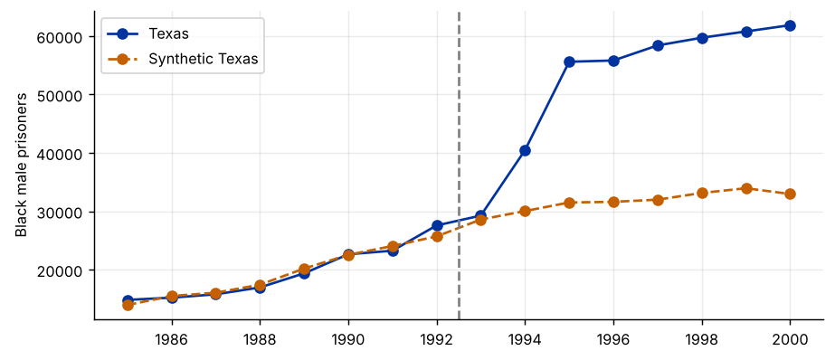
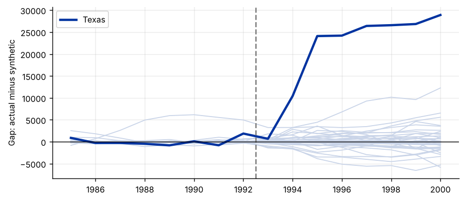

Step 1The question and the design
In 1993 Texas began a massive expansion of its prison capacity, roughly doubling the number of beds within a few years. How much did the expansion increase the number of black men in Texas prisons? The example follows Cunningham's Causal Inference: The Mixtape.
With one treated state, there is nothing to average over and no obvious control group. Which state, or average of states, shows what Texas would have looked like without the expansion? The synthetic control method (Abadie and Gardeazabal 2003; Abadie, Diamond and Hainmueller 2010) answers this with weights:
The weights are chosen so that the synthetic Texas matches the real Texas as closely as possible before 1993. The effect in each later year is the gap between the two.
Why the weights are restricted
Nonnegative weights that sum to one keep the synthetic unit inside the range of the actual donor states: an interpolation, not an extrapolation. The result is a transparent comparison: a reader can see which states make up synthetic Texas and judge whether they are plausible.
How to write it: design
We estimate the effect of the 1993 Texas prison expansion with the synthetic control method. The counterfactual for Texas is a weighted average of the other states, with nonnegative weights summing to one, chosen to reproduce the pre-1993 path of the outcome. Inference is based on placebo tests in which each donor state is in turn treated as if it had expanded its prisons.
Step 2Load the data and look at Texas
import pandas as pd
import numpy as np
import matplotlib.pyplot as plt
from causal_tests import synth_weights # helper file: causal-inference-guide/examples/causal_tests.py
df = pd.read_csv("texas.csv")
W = df.pivot(index="year", columns="state", values="bmprison")
pre = W.index < 1993
donors = [s for s in W.columns if s != "Texas" and W[s].notna().all()]
print(f"Texas plus {len(donors)} donor states, {W.index.min()}-{W.index.max()}; {pre.sum()} pre-treatment years")
fig, ax = plt.subplots()
ax.plot(W.index, W["Texas"], marker="o", label="Texas")
ax.plot(W.index, W[donors].mean(axis=1), marker="o", label="Average of other states")
ax.axvline(1992.5, color="grey", ls="--"); ax.set_ylabel("Black male prisoners"); ax.legend()Texas plus 50 donor states, 1985-2000; 8 pre-treatment years

How to read it
Texas has many more black male prisoners than the average state, even before 1993, so the simple average is a poor comparison: its level and trend differ. Any DiD against the average would rest on a parallel-trends assumption that the picture makes implausible. The synthetic control builds a better comparison.
Step 3Estimate the weights
w = synth_weights(W.loc[pre, "Texas"], W.loc[pre, donors])
weights = pd.Series(w, index=donors).sort_values(ascending=False)
print(weights[weights > 0.001].round(3).to_string())
synth = W[donors] @ w
gap = W["Texas"] - synth
rmspe_pre = np.sqrt((gap[pre] ** 2).mean())
print(f"\nPre-1993 RMSPE: {rmspe_pre:,.0f} (mean of Texas before 1993: {W.loc[pre, 'Texas'].mean():,.0f})")Florida 0.373 New York 0.355 Illinois 0.272 Pre-1993 RMSPE: 863 (mean of Texas before 1993: 19,448)
How to read it
Synthetic Texas is a combination of a few large states. The pre-treatment root mean squared prediction error (RMSPE) is small relative to the size of the series: the weighted combination tracks Texas closely before 1993. A poor pre-treatment fit would make any post-treatment gap uninterpretable, so always report this number.
This guide matches on the outcome path only. The full method also matches on predictors (income, unemployment, demographics) with a second set of weights on those predictors; the synth packages in Stata and R do this.
Step 4The effect: actual against synthetic Texas
fig, ax = plt.subplots()
ax.plot(W.index, W["Texas"], marker="o", label="Texas")
ax.plot(W.index, synth, ls="--", marker="o", label="Synthetic Texas")
ax.axvline(1992.5, color="grey", ls="--"); ax.set_ylabel("Black male prisoners"); ax.legend()
print(gap[~pre].round(0).astype(int).to_string())
print(f"\nAverage gap 1993-2000: {gap[~pre].mean():,.0f} prisoners")year 1993 676 1994 10414 1995 24097 1996 24197 1997 26404 1998 26573 1999 26842 2000 28901 Average gap 1993-2000: 21,013 prisoners

How to read it
The two lines move together until 1993 and then separate sharply: by the late 1990s Texas held tens of thousands more black men in prison than synthetic Texas. The gap is the estimated effect in each year. It grows as the new capacity came into use.
Step 5Inference: placebo-in-space
def fit_gap(target, pool):
wj = synth_weights(W.loc[pre, target], W.loc[pre, pool])
return W[target] - W[pool] @ wj
ratios, pct, fig = {}, {}, plt.figure()
ax = fig.gca()
for s in donors:
g = fit_gap(s, [d for d in donors if d != s])
ratios[s] = np.sqrt((g[~pre] ** 2).mean()) / np.sqrt((g[pre] ** 2).mean())
pct[s] = g[~pre].mean() / W.loc[pre, s].mean() # post-1993 gap relative to the state's own pre-1993 level
ax.plot(W.index, g, color="#c9d4e8", lw=1)
ax.plot(W.index, gap, color="#0033a0", lw=2.5, label="Texas")
ax.axvline(1992.5, color="grey", ls="--"); ax.axhline(0, color="black", lw=.8); ax.set_ylabel("Gap: actual minus synthetic"); ax.legend()
ratio_tx = np.sqrt((gap[~pre] ** 2).mean()) / rmspe_pre
rank = 1 + sum(r >= ratio_tx for r in ratios.values())
print(f"Texas post/pre RMSPE ratio: {ratio_tx:.1f}")
print(f"Rank among {len(ratios) + 1} states: {rank} permutation p-value: {rank / (len(ratios) + 1):.3f}")
print("Largest placebo ratios:", {k: round(float(v), 1) for k, v in sorted(ratios.items(), key=lambda kv: -kv[1])[:5]})
pct_tx = gap[~pre].mean() / W.loc[pre, "Texas"].mean()
rank2 = 1 + sum(v >= pct_tx for v in pct.values())
print(f"\nAverage post-1993 gap as a share of the pre-1993 level: Texas {pct_tx:.0%}, rank {rank2} of {len(pct) + 1}, p-value {rank2 / (len(pct) + 1):.3f}")Texas post/pre RMSPE ratio: 26.7
Rank among 51 states: 9 permutation p-value: 0.176
Largest placebo ratios: {'Pennsylvania': 338.6, 'Nebraska': 50.2, 'Georgia': 46.6, 'Kentucky': 43.9, 'Mississippi': 32.2}
Average post-1993 gap as a share of the pre-1993 level: Texas 108%, rank 2 of 51, p-value 0.039
How to read it
Each grey line is a placebo: the same method applied to a state that did not expand its prisons, as if it had. If Texas's gap were unusual only by chance, many placebo gaps would look like it.
The standard comparison uses the ratio of post- to pre-treatment RMSPE, which accounts for how well each synthetic unit fitted before 1993. The permutation p-value is Texas's rank among all states divided by the number of states. On this statistic Texas ranks 9th of 51 (p ≈ 0.18). But look at which states beat it: Pennsylvania's ratio is over 300 because its synthetic control fits its pre-1993 path almost perfectly, so even a modest later deviation is enormous relative to that fit. With only 8 pre-treatment years, the ratio is a fragile statistic.
A second statistic is the average post-1993 gap as a share of each state's own pre-1993 level. On this measure Texas's gap, more than its entire pre-1993 level, ranks second of 51 (p ≈ 0.04). Report both, and explain the difference: the effect is very large in size, and the conventional ratio-based p-value is weakened by placebo states with near-perfect pre-treatment fits.
A standard refinement drops placebo states whose pre-treatment fit is much worse than Texas's (Abadie et al. 2010 use two or five times its pre-RMSPE); here the problem runs the other way, which is why a second statistic helps.
Step 6Robustness: leave-one-out and an in-time placebo
for s in weights[weights > 0.01].index:
pool = [d for d in donors if d != s]
g = fit_gap("Texas", pool)
print(f"Without {s:14s} average gap 1993-2000: {g[~pre].mean():,.0f}")
early = W.index < 1989
w_fake = synth_weights(W.loc[early, "Texas"], W.loc[early, donors])
g_fake = W["Texas"] - W[donors] @ w_fake
print(f"\nIn-time placebo (fake treatment in 1989): average gap 1989-1992 = {g_fake[(W.index >= 1989) & pre].mean():,.0f}")Without Florida average gap 1993-2000: 21,733 Without New York average gap 1993-2000: 20,006 Without Illinois average gap 1993-2000: 20,619 In-time placebo (fake treatment in 1989): average gap 1989-1992 = 936
How to read it
- Leave-one-out. Dropping each state with a positive weight in turn and re-estimating should not change the conclusion. If it did, the result would hinge on one donor.
- In-time placebo. Pretending the expansion happened in 1989 and using only earlier years for the weights, there should be no gap between 1989 and 1992. A gap would mean synthetic Texas cannot track Texas even when nothing happens.
Step 7Write the paper
How to write it: results
Synthetic Texas, a weighted combination of a few other large states, closely reproduces the number of black male prisoners in Texas before 1993. After the expansion of prison capacity, the two series diverge sharply: by the end of the decade Texas held tens of thousands more black men in prison than its synthetic counterpart. The result is robust to excluding any single donor state, and an in-time placebo shows no divergence before 1993. In placebo-in-space tests, the gap for Texas relative to its pre-1993 level is the second largest of 51 states (permutation p = 0.04); on the ratio of post- to pre-treatment prediction errors, Texas ranks ninth of 51, because several placebo states have near-perfect pre-treatment fits that inflate their ratios.
Common mistakes
- Including donors that were affected by the same policy, or by spillovers from the treated unit.
- Interpreting a gap when the pre-treatment fit is poor.
- Using conventional standard errors. With one treated unit, inference comes from placebo permutations.
- Choosing the pre-treatment period or the donor pool after looking at the results.
- Too short a pre-treatment period: the weights then fit noise.